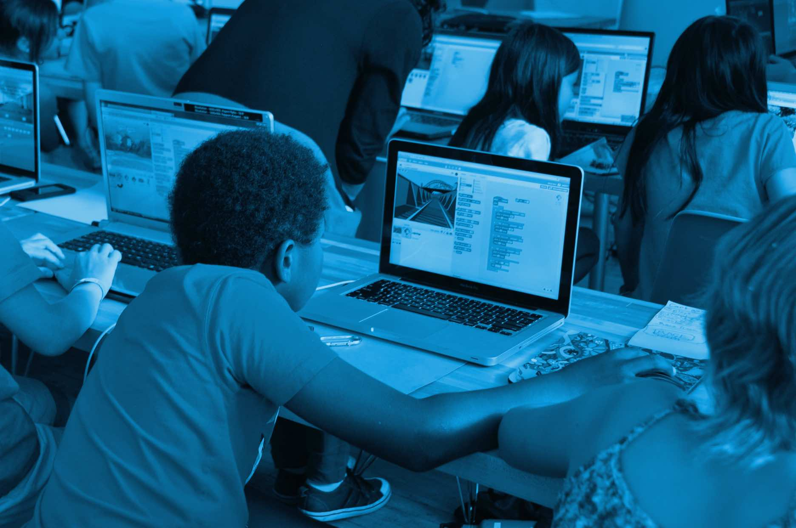

Intents
• Content by priority kids. • Photo credits: sight media lab.
Hey thanks for visting the priority kids website.
We Are
priority kids.® LLC is an organization, utilizing an aggregate approach to empowering “the global child”. Where they can stay on track through higher education and technical skills programs. As well as go on to compete effectively in the global markets for goods and services.
When developing for the youth, keeping the stage of the their in mind from the start prevents frustration down the road. For example, styles and behavior schemes are heavily influenced by environnment and by social interactions young people experience daily. By recognizing these influences, educators and program developers can tailor their approaches to better support positive growth, ensuring that interventions are both age-appropriate and relevant to the youths’ lived experiences.
Every child will be provided with opportunity to acquire essential skills and tools that will allow them to grow and mature into model citizens, who will benefit their communities and lead future generations to the path of success through purification and cultivation.
(By the Permission of Allah)The power of intentions
exposure + education: Developing Culture For The Global World and its New Leaders.
sustainable living solutions: Developing essential foundations for attaining enriching lifestyle.
academic performance + progress: Rising Academic achievement and the development of critical thinking skills.
Conclusion
The goal is to create a funding and social platform, so that children are surrounded by an enriching environment of education-oriented peers, supportive adults and true economic resource allocation. A counterweight to a toxic popular culture that glorifies misogyny, anti-social behavior and “poverty for the most, for pleasure for a few”. The company, our staff and 13-member board are committed to funding or creating value solutions that offer the highest possible quality services, with the goals of implementing best practices and improving the lives of children and their families in the global community..